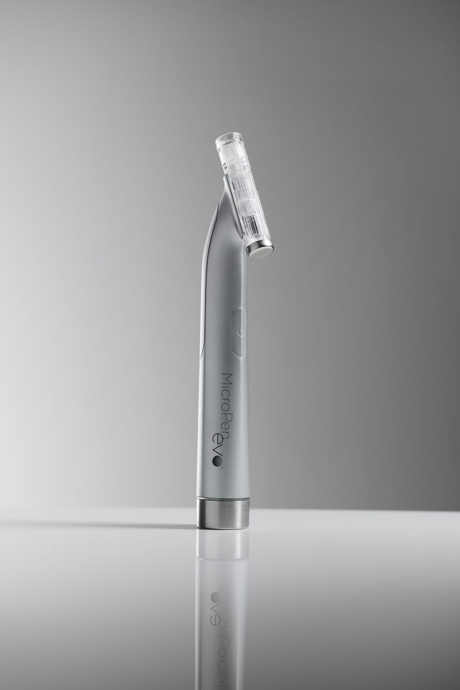

Iho on älykäs elin
Ymmärtääkseen mikroneulausta täytyy ensin ymmärtää, miten iho toimii.
Iho ei ole passiivinen suojakerros, vaan aktiivinen, jatkuvasti uusiutuva elin jolla on kyky korjata itseään. Kun ihoon syntyy vaurio, olipa se sitten naarmu, haava tai mikroskooppinen pistos, elimistö reagoi välittömästi käynnistämällä monimutkaisen korjausprosessin.
Tämän prosessin keskiössä on kollageeni, ihon tärkein rakennusaine. Kollageeni tekee ihosta napakan, joustavan ja tiiviin. Nuorella iholla kollageenituotanto on vilkasta, mutta jo 25 ikävuoden jälkeen tuotanto alkaa hidastua. 30-vuotiaana iho tuottaa kollageenia noin prosentin vähemmän joka vuosi. Tämä on syy siihen, miksi iho alkaa veltostua, juonteet syvenevät ja ihon tekstuuri muuttuu.
Mikroneulaus hyödyntää ihon omaa korjausmekanismia aktivoidakseen kollageenituotannon uudelleen.
Miten mikroneulaus toimii käytännössä
Kliinisessä mikroneulauksessa käytetään kynämäistä laitetta, jossa on erittäin ohut, steriili neulapää. Laite tekee ihon pintaan tuhansia mikroskooppisen pieniä kanavia hallitusti ja tarkasti.
Nämä mikrokanavat ovat niin ohuita, ettei silmä juuri niitä havaitse, mutta elimistölle ne ovat riittävä signaali käynnistää korjausprosessi. Iho tulkitsee kanavat vaurioiksi ja aktivoi korjaavat solumekanismit.
Seurauksena tapahtuu useita rinnakkaisia prosesseja:
Kollageenisynteesin käynnistyminen
Fibroblastit, ihon kollageenia tuottavat solut, aktivoituvat ja alkavat rakentaa uutta kollageenia. Tämä ei tapahdu hetkessä, vaan prosessi jatkuu viikoista kuukausiin hoidon jälkeen. Uudet kollageenisäikeet rakentuvat entisten päälle vahvistaen ihon tukirakennetta.
Elastiinin tuotanto
Kollageenin lisäksi iho alkaa tuottaa elastiinia, joka vastaa ihon kimmoisuudesta ja joustavuudesta. Elastiini on rakennusaine, joka pitää ihon kimmoisana ja palautumiskykyisenä.
Ihon uusiutumissyklin nopeutuminen
Hoito kiihdyttää ihosolujen uusiutumista, mikä näkyy ihon sävyn tasaantumisena ja pintarakenteen parantumisena.
Oleellista on, että koko prosessi on täysin biologinen. Mikroneulauksessa ei käytetä vieraita aineita eikä pakoteta ihoa mihinkään luonnottomaan, vaan se ainoastaan herättää mekanismit, jotka ihossa ovat jo olemassa.
Mitä hoidon aikana tapahtuu
Kliininen mikroneulaushoito etenee aina loogisesti vaiheittain.
Hoito alkaa ihon perusteellisella puhdistuksella. Meikki, aurinkosuoja ja epäpuhtaudet poistetaan huolellisesti kaksoispuhdistuksella. Tämä on hoidon turvallisuuden kannalta keskeinen vaihe, sillä puhdas iho on ehdoton edellytys aseptiselle toimenpiteelle.
Tämän jälkeen asiantuntija valitsee laitteeseen steriilin kertakäyttöisen neulapään asiakkaan nähden. Neulapää vaihdetaan aina jokaiselle asiakkaalle erikseen eikä samaa neulapäätä koskaan käytetä uudelleen.
Varsinainen neulaus toteutetaan hallitusti ja järjestelmällisesti. Ammattilaislaite mahdollistaa neulaussyvyyden tarkan säädön eri kasvojen alueilla, sillä ihon paksuus vaihtelee merkittävästi esimerkiksi otsan ja poskien välillä. Oikea syvyys kullekin alueelle on avain sekä turvallisuuteen että tuloksiin.
Hoito saattaa tuntua pienenä nipistelynä tai värinänä, mutta toimenpide on yleensä hyvin siedettävä ja nopeasti ohi.
Hoidon päätteeksi käymme läpi jälkihoito-ohjeet ja saat mukaan hoitavan voiteen ensimmäiseksi 24 tunniksi.
Miltä iho näyttää hoidon jälkeen
Hoidon jälkeen iholla esiintyy punoitusta ja lievää kuumotusta. Nämä ovat täysin normaaleja fysiologisia vasteita ja kertovat, että ihon korjausprosessi on käynnistynyt.
Punoitus laskee tyypillisesti ensimmäisen vuorokauden aikana. Seuraavina päivinä iho saattaa tuntua hieman tiukalta tai karhealta, ja pintakerros voi hilseillä lievästi. Tämä on merkki siitä, että vanha iho uusiutuu ja korvautuu uudella.
Ensimmäiset selkeät tulokset alkavat näkyä yleensä muutaman viikon kuluttua hoidosta, kun uutta kollageenia on ehtinyt muodostua. Iho tuntuu napakoituneelta, tasaisemmalta ja kirkkaamman näköiseltä.
Miksi tulokset ovat pysyviä
Toisin kuin monet pintahoitomenetelmät, mikroneulaus vaikuttaa ihon syvempiin kerroksiin, juuri sinne missä kollageeni ja elastiini muodostuvat.
Koska iho rakentaa itse uutta kudosta, muutos on rakenteellinen. Tulokset eivät katoa pesun tai ajan myötä samalla tavalla kuin pintahoitojen vaikutukset, sillä iho todella muuttuu.
Yksittäinen hoitokerta käynnistää prosessin, mutta pysyvät tulokset vaativat useimmiten kolmesta kuuteen hoitokertaa. Tämä perustuu kollageenisynteesin biologiaan, sillä jokainen hoitokerta lisää uutta kollageenia entisten kerroksien päälle ja muutos kumuloituu.
Hoitokertojen välillä pidetään yleensä noin neljän viikon tauko, jotta iho ehtii rauhassa käydä läpi oman korjausprosessinsa ennen seuraavaa hoitoa. Tutkimusnäyttö hoidon vaikutuksista ja pitkäaikaistuloksista on koottu tarkemmin omaan artikkeliinsa.
Yksilölliset erot vaikuttavat tuloksiin
Vaikka mikroneulaukseen liittyvät fysiologiset reaktiot ovat biologisesti universaaleja, hoito ei toimi kaikilla täysin samalla tehokkuudella. Kollageenisynteesin käynnistyminen on kaikille sama prosessi, mutta kuinka tehokkaasti elimistö sen toteuttaa vaihtelee yksilöstä toiseen.
Yleinen terveydentila, ikä ja elintavat vaikuttavat tuloksiin merkittävästi. Tupakointi heikentää kollageenisynteesiä ja hidastaa ihon paranemisprosessia. Pitkäaikainen aurinkoaltistus hajottaa kollageenia ja heikentää ihon luontaista korjauskapasiteettia. Ikääntyminen hidastaa fibroblastien toimintaa, jolloin kollageenia muodostuu hitaammin, mutta kollageenisynteesi käynnistyy silti. Ikääntyvä iho reagoi hoitoon ja hyötyy siitä, ja koska ikääntymisen merkit kuten juonteet ja velttous ovat juuri niitä asioita joita hoidolla korjataan, tulokset ovat usein hyvin merkityksellisiä. Hoitosarjan pituus saattaa olla pidempi kuin nuoremmalla iholla, mutta se ei tarkoita että tuloksia ei synny. Sarjahoito ja riittävä hoitokertojen määrä tasaavat yksilöllisiä eroja merkittävästi, sillä kumulatiivinen vaikutus rakentuu jokaisen hoidon myötä.
Mihin haasteisiin kliininen mikroneulaus soveltuu
Koska hoito perustuu ihon oman rakenteen vahvistamiseen sisältäpäin, se soveltuu laaja-alaisesti erilaisiin ihon haasteisiin:
Aknearpien tasoittuminen
Uusi kollageeni nostaa arven jättämää kuoppaa ylöspäin ja tasoittaa ihon pintarakennetta. Tulos ei synny hetkessä, mutta sarjahoidolla muutos on selkeästi havaittavissa.
Juonteet ja ikääntymisen merkit
Kun ihon kollageenirakenne vahvistuu, hienot juonteet silottuvat ja iho näyttää napakoituneemmalta.
Pigmenttimuutokset
Ihon kiihtynyt uusiutuminen auttaa hajottamaan ylimääräistä melaniinikertymää, mikä tasaa ihon sävyä ja vaalentaa tummia läiskiä tasaisesti.
Laajentuneet ihohuokoset
Kun ihohuokosia ympäröivä tukirakenne vahvistuu kollageenisynteesin kautta, huokoset supistuvat ja näyttävät huomattavasti pienemmiltä.
Mikroneulaus ei kuitenkaan sovi kaikille. Lue tarkempi soveltuvuusarvio ikäryhmittäin, ihotyypeittäin ja kaikkien vasta-aiheiden osalta.
Kliininen hoito: mitä se tarkoittaa käytännössä

Sana “kliininen” ei ole pelkkä markkinointitermi. Se tarkoittaa, että hoito toteutetaan terveydenhuollon ammattilaisen toimesta, lääkinnälliseksi laitteeksi luokitellulla välineistöllä ja ehdottomalla aseptiikalla.
Ammattilaislaite mahdollistaa neulaussyvyyden tarkan säädön, jolloin jokaiselle kasvojen alueelle valitaan optimaalinen syvyys ihon paksuuden ja hoidettavan haasteen mukaan. Tämä tarkkuus ei ole mahdollista kotikäyttöön tarkoitetuilla laitteilla. Lue lisää kliinisen mikroneulauksen ja mikroneularullan eroista.
Steriilit kertakäyttöiset neulapäät vaihdetaan jokaisen hoidon alussa asiakkaan nähden. Hoitotila puhdistetaan kliinisen tarkasti jokaisen asiakkaan välissä.
Tulokset ovat kliinisessä ympäristössä parempia, koska hoito voidaan toteuttaa tarkemmin, turvallisemmin ja yksilöllisemmin kuin kotiolosuhteissa koskaan olisi mahdollista.
Yhteenveto
Kliininen mikroneulaus on biologiaan perustuva menetelmä, joka aktivoi ihon omat korjausprosessit. Se ei pakota ihoa mihinkään keinotekoiseen, vaan ainoastaan herättää mekanismit, jotka ihossa jo ovat.
Tulokset syntyvät hitaasti mutta pysyvästi. Jokainen hoitokerta lisää uutta kollageenia, vahvistaa ihon tukirakennetta ja parantaa ihon tekstuuria tavalla, joka näkyy ja tuntuu.